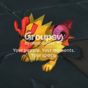
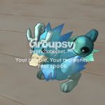
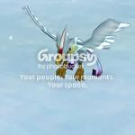
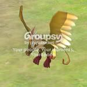
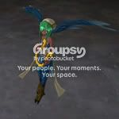

Bird

Gail Chimera
LV : 35
HP : 1,300
EXP / Job EXP : 566 / 876
Attribute :
 Personality
Personality : Non Active
Map :
Main Floor 4F /
Light Tower B-5F / Ancient Dungeon[ผู้อาศัยใต้ดิน นักฆ่าเขาวงกต]
Item : Smoke Ham / Koketoris Wing / Chimera Crest
Venamous Chimera
LV : 45
HP : 1,980
EXP / Job EXP : 906 / 1,224
Attribute :
 Personality
Personality : Active
Map : Ancient Dungeon[ฝูงปีศาจ เงาขาวที่ซ่อน เขาวงกตใต้ดิน]
Item : Smoke Ham / Chimera Wing / Chimera Crest /
Fire Cologne
 Chimera
LV
Chimera
LV : 48
HP : 1,500
EXP / Job EXP : 1,166 / 546
Attribute :
 Personality
Personality : Active
Map :
South Dungeon B2F-B3F
Item : Smoke Ham / Chimera Wing / Chimera Crest /
Fire Cologne /
Chimera Stamp

Aqua Chimera
LV : 55
HP : 2,150
EXP / Job EXP : 1,100 / 1,370
Attribute :
 Personality
Personality : Active
Map : Ancient Dungeon[วงกตแห่งมรณะ เขาวงกตใต้ดิน]
Item : Smoke Ham / Chimera Wing / Chimera Crest /
Fire Cologne
 Albeno Chimera
LV
Albeno Chimera
LV : 65
HP : 20,000
EXP / Job EXP : 11,900 / 15,300
Attribute :
 Personality
Personality : Active
Map : Ancient Dungeon[ฝูงปีศาจ เงาขาวที่ซ่อน]
Item :
Light Arrow /
Plasma /
Chimera Wing
Cocko
LV : 8
HP : 50
EXP / Job EXP : 18 / 17
Attribute :
Personality : Active / Link Cocko
Map :
Fareast Highway /
Eastor Cape /
Utena Lake /
Fruit Forest
Item : Egg / Cocko Wing / Riped Magical Book / Power Crystal /
Cocko Stamp
Koketoris
LV : 19
HP : 130
EXP / Job EXP : 102 / 33
Attribute :
Personality : Active / Link Koketoris
Map :
East Acronia Coast /
Utena Lake /
Fareast Highway /
Eastor Cape / Ancient Dungeon[ผู้อาศัยใต้ดิน เขาวงกตใต้ดิน ค้นหาเขาวงกต]
Item : Koketoris Wing / Great Meat / Egg /
Eye of Koketoris / Power Crystal / Cocko Liver /
Koketoris Stamp
Cococko
LV : 23
HP : 150
EXP / Job EXP : 105 / 75
Attribute :
Personality : Non Active
Map :
Momo Plain /
Barn
Item : Meat / Pet Food / Mold /
Great Meat /
Copper Medal
 Immature Cococko
LV
Immature Cococko
LV : 24
HP : 300
EXP / Job EXP : 90 / 105
Attribute :
Personality : Non Active
Map :
Momo Plain /
Barn / Ancient Dungeon[ผู้อาศัยใต้ดิน]
Item : Egg / Meat / Black Vinegar /
Great Meat /
Copper Medal
Tosaka
LV : 25
HP : 450
EXP / Job EXP : 0 / 0
Attribute :
Personality : Non Active
Map : Ancient Dungeon[ผู้อาศัยใต้ดิน]
Item : No
 Gold Cococko
LV
Gold Cococko
LV : 30
HP : 1,350
EXP / Job EXP : 375 / 420
Attribute :
Personality : Link Bird Type
Map :
Waterlayer
Item : Milk / Greate Meat / Sirlion / Power Crystal
Basilicoke
LV : 35
HP : 1,200
EXP / Job EXP : 675 / 675
Attribute :
Personality : Active
Map :
Bastion of Fushigi Guild /
Barn
Item : Koketoris Wing / Great Egg / Mold / Siliron /
Copper Medal
 Cokaras
LV
Cokaras
LV : 45
HP : 2,550
EXP / Job EXP : 825 / 720
Attribute :

 Personality
Personality : Non Active
Map :
East Dungeon / Ancient Dungeon[วงกตแห่งมรณะ เขาวงกตใต้ดิน]
Item : Great Egg /
Dark Feather Wing / Pet Food /
Silver Medal
Giant Koketoris
LV : 10
HP : 9,800
EXP / Job EXP : 9,600 / 3,000
Attribute :
Personality : Active
Map :
East Acronia Coast / Ancient Dungeon[ผู้อาศัยใต้ดิน]
Item : Eye of Koketoris / Imperial Topaz / Wing Mask /
Giant Cocko Stamp

Thunder Bird
LV : 37
HP : 400
EXP / Job EXP : 527 / 408
Attribute :
Personality : Active
Map :
Middle North Mountain / Ancient Dungeon[เงาขาวที่ซ่อน]
Item : Meat / Great Meat / Riped Magical Book / Rock Bird /
Thunder Bird Stamp
Geego
LV : 41
HP : 665
EXP / Job EXP : 636 / 571
Attribute :
Personality : Active
Map :
Volcano /
Bed Rock of Soul
Item : Egg / Beak / Power Crystal /
Geego Stamp
Khight Stock
LV : 55
HP : 2,550
EXP / Job EXP : 1,316 / 1,110
Attribute :
Personality : Active When HP Remain
Map :
Bastion of Fushigi Guild /
Poison Swamp
Item : Great Egg / Beak / Egg / Power Crystal /
Rock Bird

Yellow Geego
LV : 36
HP : 2,650
EXP / Job EXP : 750 / 759
Attribute :
Personality : Link Bird Type
Map :
Waterlayer
Item : Egg / Dark Feather Wing / Great Skin / Critical Crystal
 Orange Geego
LV
Orange Geego
LV : 78
HP : 6,500
EXP / Job EXP : 3,675 / 3,675
Attribute :
Personality : Active
Map :
Baobab Forest
Item : Great Meat / Light Blue Wing1 / Teriyaki / Wing Mask(Black) / Luxurious Feathers
Dracky
LV : 19
HP : 230
EXP / Job EXP : 117 / 53
Attribute :
Personality : Active
Map :
Teritory Cave B1F-B2F
Item : Meat / Riped Magical Book / Small Steel Sword / Power Crystal /
Dracky Stamp
Cut Bat
LV : 28
HP : 410
EXP / Job EXP : 221 / 119
Attribute :
Personality : Active
Map :
Ancient Coal Mine B1F
Item : Meat / Riped Magical Book /
Copper Medal /
Small Steel Sword /
Cut Bat Stamp
 Night Bat
LV
Night Bat
LV : 25
HP : 430
EXP / Job EXP : 151 / 204
Attribute :
Personality : Active
Map : Ancient Dungeon[เงาขาวที่ซ่อน เขาวงกตใต้ดิน]
Item : Meat / Small Steel Sword / Riped Magical Book / Power Crystal
 Necro Bat
LV
Necro Bat
LV : 43
HP : 1,500
EXP / Job EXP : 675 / 825
Attribute :
Personality : Active
Map : Ancient Dungeon[ผู้อาศัยใต้ดิน เขาวงกตใต้ดิน]
Item : Meat / Riped Magical Book / Small Steel Sword / Power Crystal
 Heavy Bat
LV
Heavy Bat
LV : 65
HP : 2,800
EXP / Job EXP : 2,475 / 1,875
Attribute :
Personality : Link Chain Reaction
Map :
Main Floor 2F /
Light Tower B-8F /
Upper Light Tower
Item : Great Meat / Golden Fang / Rukimi's Jewel / Alloy Stone3 /
Sharp Fang
Harpy
LV : 90
HP : 12,500
EXP / Job EXP : 4,800 / 4,950
Attribute :
Personality : Non Active
Map :
Light Tower A13F-A20F
Item : Light Blue Wing1 / Herb Candy / Riped Magic Book / Unicorn Horn /
Tuning Fork Tube /
Heaven's Harp

Okypete
LV : 95
HP : 18,500
EXP / Job EXP : 6,750 / 6,975
Attribute :
Personality : Non Active
Map :
Maimai Ancient Sun Deck / Inside Maimai Ancient
Item : Light Blue Wing1 / Herb Candy / Life Crystal /
Tuning Fork Tube
Pepen
LV : 27
HP : 500
EXP / Job EXP : 136 / 119
Attribute :
Personality : Non Active
Map :
Northern Highland /
Middle North Mountain /
North Endless
Item : Milk / Cold Candy / Life Crystal /
Snow Drop /
Copper Medal /
Fire Dragon Egg /
Pepen Stamp
 Pulun
LV
Pulun
LV : 31
HP : 720
EXP / Job EXP : 298 / 213
Attribute :
Personality : Active
Map :
Middle North Mountain /
North Endless
Item : Milk / Marshmallow / Life Crystal /
Snow Drop /
Copper Medal /
Fire Dragon Egg
South Pepen
LV : 38
HP : 700
EXP / Job EXP : 510 / 578
Attribute :
Personality : Active
Map :
Bed Rock of Soul
Item : Spice / Black Vinegar / Marshmallow / Red Seriko / Life Crystal /
Southern Country Pepen Stamp
 Houou
LV
Houou
LV : 64
HP : 2,400
EXP / Job EXP : 2,700 / 2,315
Attribute :
Personality : Non Active
Map :
South Dungeon B3F / Ancient Dungeon[คุกที่น่าสะพรึง เขาวงกตใต้ดิน]
Item : Great Meat / Fire Cologne / Fire Wing /
Fire Summon Stone / Red Powder /
Houou Stamp
 Raiou
LV
Raiou
LV : 64
HP : 32,000
EXP / Job EXP : 43,200 / 17,760
Attribute :
Personality : Chain Reaction
Map :
South Dungeon B3F / Ancient Dungeon[ฝูงปีศาจ คุกที่น่าสะพรึง]
Item :
Copper Medal / Silver Medal /
Tiny Medal /
Rainbow Tiny Medal /
Raiou Stamp
 Purple Chimera
LV
Purple Chimera
LV : 35
HP : 1,850
EXP / Job EXP : 650 / 2,730
Attribute :
Personality : Active When HP Remain
Map :
Hell Desert (Night)
Item : Great Meat / Bayou Oily Meat / Critical Crystal /
Chimera Wing
Purple Cococko
LV : 23
HP : 250
EXP / Job EXP : 105 / 75
Attribute :
Personality : Non Active
Map :
Sky Tower Island [Dominion] /
Warship Island [Dominion]
Item : Meat / Pet Food / Mold / Great Meat / Copper Medal
Red Necro Bat
LV : 43
HP : 1,500
EXP / Job EXP : 675 / 825
Attribute :
Personality : Chain Reaction
Map :
Golden Bridge (Night) /
Hell Desert (Night)
Item : Meat / Riped Magical Book / Small Steel Sword / Power Crystal